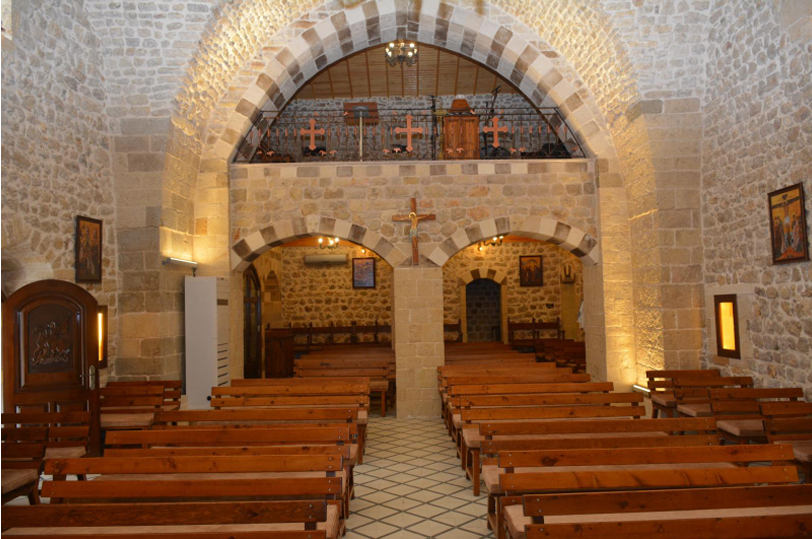
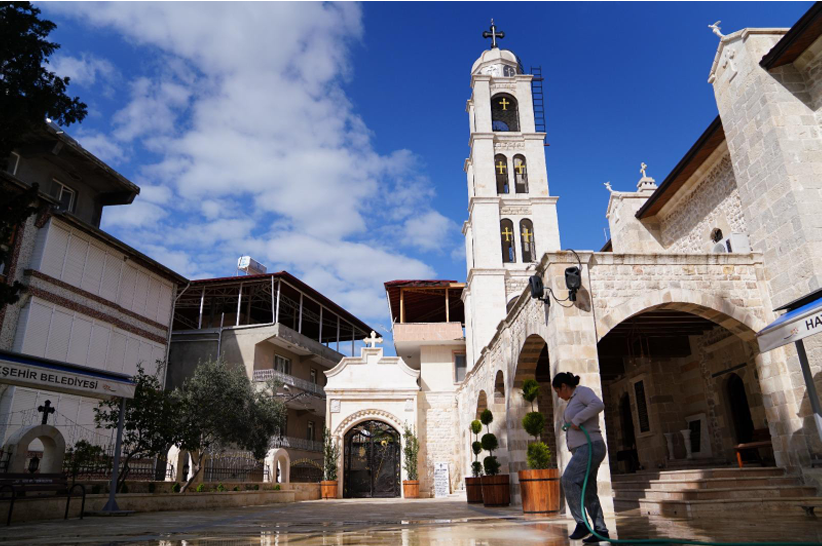

Tarihi Kilise
Tahmini inşaat tarihi: 1364. Orta kemeri, 1872 depreminden sonra 1881’de tamamlanan onarımları kaydediyor.

Altınözü, Hatay · Türkiye
Sarılar’daki Yunan Ortodoks topluluğunun kültürel ve tarihi mirasını korumaya çağrı.
Proje
Neden restorasyon acil
Bina kısmen çökmüş durumda. Hizmetler şu anda yan binadaki üçüncü kattaki taziye ve etkinlik odasında yapılıyor, buradaki kapasite sınırlı.
Tahmini inşaat tarihi: 1364. Orta kemeri, 1872 depreminden sonra 1881’de tamamlanan onarımları kaydediyor.
Sarılar topluluğu 360 hane ve yaklaşık 1.500 kişiden oluşuyor.
Yurtdışında yaşayan 20.000 civarında topluluk üyesi, ailelerinin memleketiyle bağlı kalmaya devam ediyor.
Mirası korumak
Proje, önemli bir ibadet yerini korumayı, topluluğun kültürel uygulamalarının devamını desteklemeyi ve bölgenin kültürel turizmine ve çok kültürlü yaşamına katkıda bulunmayı amaçlıyor.
Topluluk hakkında bilgi edin →